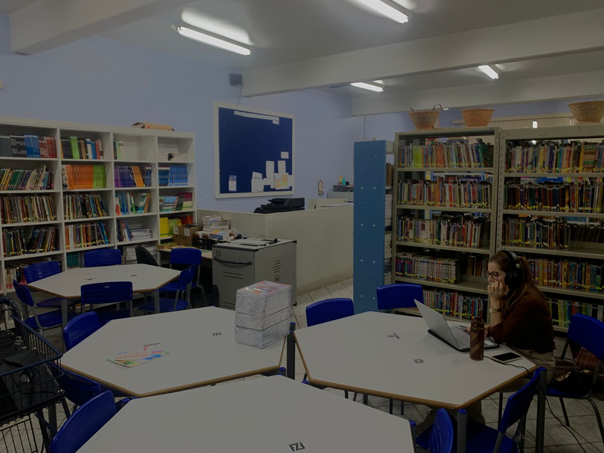
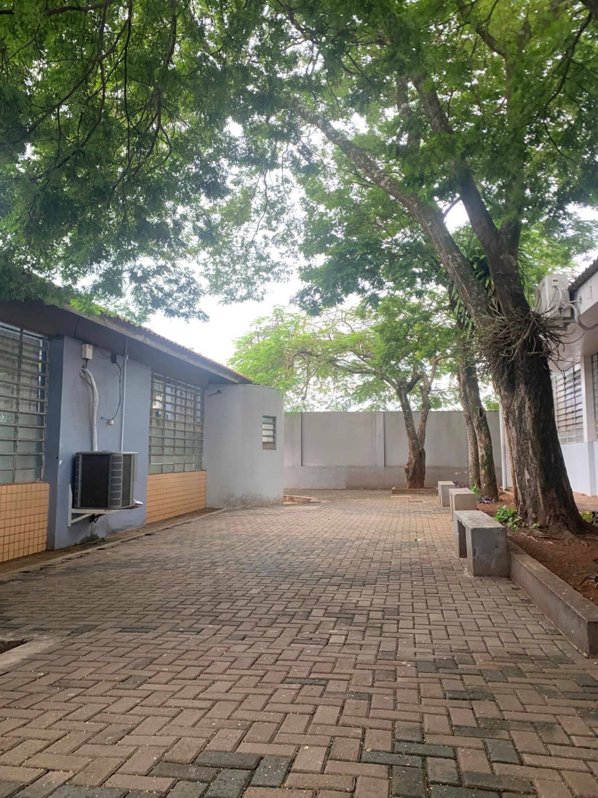

Colégio que inspira
O Colégio Estadual Professor Mariano Camilo Paganoto representa um pilar fundamental de transformação social, acolhimento e qualificação profissional para a comunidade de Foz do Iguaçu. Localizada no Jardim Petrópolis, a instituição vai muito além do ensino tradicional, sendo reconhecida como um ponto de referência humano e técnico na região
Entre em Contato!
Colégio
Para o Colégio Paganoto, o conhecimento não é apenas o acúmulo de informações ou a memorização de conteúdos para uma prova. Ele representa uma ferramenta viva de transformação, emancipação social e ponte para o futuro dos estudantes de Foz do Iguaçu.
Sobre o colégio
O Colégio Mariano Camilo Paganoto é uma instituição de ensino comprometida com a formação integral, unindo acolhimento humano, inovação e preparação prática para o mercado de trabalho. Com o lema "Colégio que inspira", a escola destaca-se por seu propósito pedagógico voltado ao desenvolvimento de competências técnicas e socioemocionais, capacitando os estudantes a transformarem conhecimento em soluções para o futuro.
